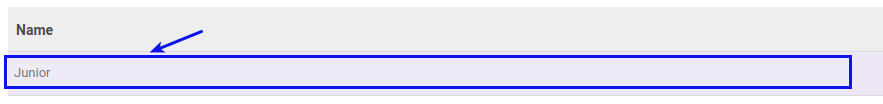

Memodifikasi Sub Skill
(Instruksi kerja ini merupakan sub instruksi dari (1) Membuat Skill, atau (2) Memodifikasi Skill. Instruksi kerja ini tidak bisa berdiri sendiri)
A. INPUT
(Tidak ada prasyarat khusus)
B. INSTRUKSI KERJA
- Buka tab Sub Skill.
- Double Klik pada data yang akan diedit pada tabel Sub Skill.

- Isi dan sesuaikan Name. Harus diisi.
- Ulangi langkah ke-2 untuk memodifikasi Sub Skill.
- Lanjutkan langkah ke-7 instruksi Membuat Skill atau langkah ke-8 instruksi Memodifikasi Skill.
C. OUTPUT
(Tidak ada instruksi khusus)